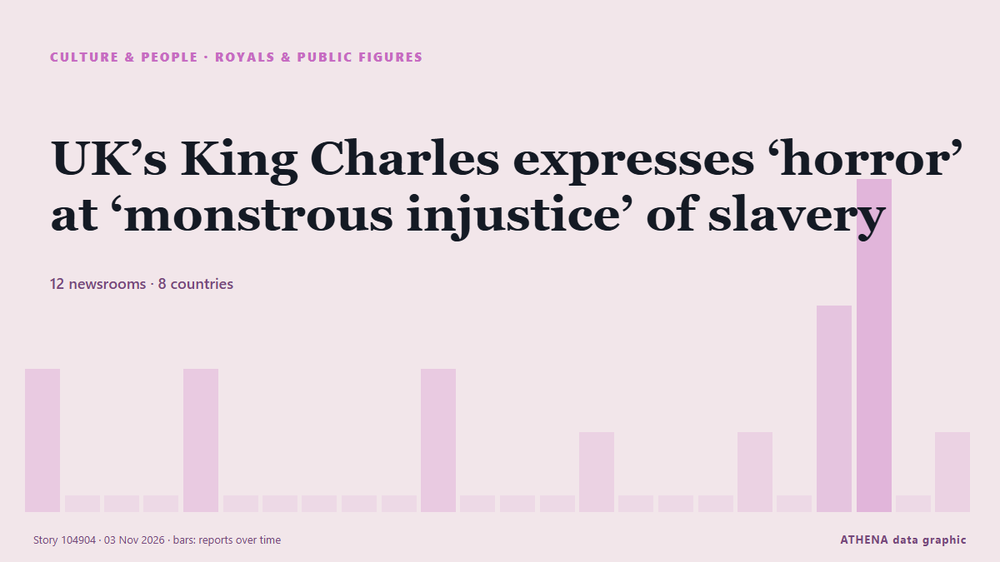

UK’s King Charles expresses ‘horror’ at ‘monstrous injustice’ of slavery

ST JOHN'S, Antigua and Barbuda (AFP) — King Charles III called the transatlantic slave trade "a monstrous injustice" Tuesday, opening a Commonwealth summit in which United Kingdom (UK) leader Andy… από Jamaica Observer
Αναφέρθηκε ανεξάρτητα από 18 μέσα σε 12 χώρες από τις 2 Νοε, πρώτο το Evening Standard (London)· η κάλυψη εξαπλώνεται ακόμη. Τα αθλητικά και τα πολιτιστικά καταχωρούνται χωρίς εκτίμηση κινδύνου. Βεβαιότητα 89% (υψηλή): το επιβεβαιώνουν 18 ανεξάρτητα μέσα, μέση αξιοπιστία 75%. Μέσα ανά χώρα: Ηνωμένο Βασίλειο (7), Τουρκία (3), Ηνωμένες Πολιτείες (2). Κάλυψη: 2 Νοε έως 3 Νοε, 28 ώρες.
Τι άλλαξε: 21 νέες αναφορές από 17 μέσα στο 24ωρο έως 3 Νοε.
Πρώτη διατύπωση: King Charles to address slavery discussion with 'unflinching honesty' in Commonwealth speech
Οι τίτλοι των ειδήσεων παρουσιάζονται στα αγγλικά, όπως δημοσιεύτηκαν.
Με μια ματιά
Επιλέγεται, βαθμολογείται και γράφεται από τη δημοσιευμένη μεθοδολογία του ATHENA. Κανένας συντάκτης δεν παρεμβαίνει σε μεμονωμένα γεγονότα. Πώς παράγεται ›
| 02 Nov 18:41 UTC | 2 |
|---|---|
| 02 Nov 19:41 UTC | 0 |
| 02 Nov 20:41 UTC | 0 |
| 02 Nov 21:41 UTC | 0 |
| 02 Nov 22:41 UTC | 2 |
| 02 Nov 23:41 UTC | 0 |
| 03 Nov 00:41 UTC | 0 |
| 03 Nov 01:41 UTC | 0 |
| 03 Nov 02:41 UTC | 0 |
| 03 Nov 03:41 UTC | 0 |
| 03 Nov 04:41 UTC | 2 |
| 03 Nov 05:41 UTC | 0 |
| 03 Nov 06:41 UTC | 0 |
| 03 Nov 07:41 UTC | 0 |
| 03 Nov 08:41 UTC | 1 |
| 03 Nov 09:41 UTC | 0 |
| 03 Nov 10:41 UTC | 0 |
| 03 Nov 11:41 UTC | 0 |
| 03 Nov 12:41 UTC | 1 |
| 03 Nov 13:41 UTC | 0 |
| 03 Nov 14:41 UTC | 3 |
| 03 Nov 15:41 UTC | 5 |
| 03 Nov 16:41 UTC | 0 |
| 03 Nov 17:41 UTC | 1 |
| 03 Nov 18:41 UTC | 1 |
| 03 Nov 19:41 UTC | 1 |
| 03 Nov 20:41 UTC | 3 |
| 03 Nov 21:41 UTC | 1 |
Γιατί αυτοί οι αριθμοί
Σημασία
Κίνδυνος
Βεβαιότητα
Η κάλυψη — ποιος το ανέφερε και πότε
ο τίτλος όπως δημοσιεύτηκε · ανοίγει το πρωτότυπο- Evening Standard (London) · Ηνωμένο ΒασίλειοKing and Queen view slavery artefacts during Antigua and Barbuda visit
- Africanews (English) · AFRKing Charles to address slavery discussion with 'unflinching honesty' in Commonwealth speech
- The Irish News (Belfast) · Ηνωμένο ΒασίλειοPM denies claims offer of slavery apology talks made things difficult for King
- Belfast Telegraph · Ηνωμένο ΒασίλειοPM denies claims offer of slavery apology talks made things difficult for King
- The Irish News (Belfast) · Ηνωμένο ΒασίλειοKing to speak about slavery with ‘unflinching honesty’ at Commonwealth summit
- Belfast Telegraph · Ηνωμένο ΒασίλειοKing to speak about slavery with ‘unflinching honesty’ at Commonwealth summit
- The Irish News (Belfast) · Ηνωμένο ΒασίλειοPM opens slavery apology talks with Commonwealth as King also set to raise issue
- The New York Times (World) · Ηνωμένες ΠολιτείεςKing Charles Says U.K.’s Role in Slave Trade ‘Fills My Heart With Horror’
- Jamaica Observer · ΤζαμάικαUK’s King Charles expresses ‘horror’ at ‘monstrous injustice’ of slavery
- Anadolu Agency (English) · ΤουρκίαKing Charles expresses 'profound sorrow' over transatlantic slave trade at Commonwealth summit
- France 24 English · ΓαλλίαKing Charles says he has greater understanding of 'horrors' of slavery, falls short of apology
- Anadolu Agency (English) · ΤουρκίαKing Charles warns of global instability at Commonwealth summit
- Sydney Morning Herald · Αυστραλία‘Fills my heart with horror’: King Charles expresses personal sorrow over slavery
- The Canadian Press (via CityNews) · ΚαναδάςKing Charles III speaks to world leaders in Antigua, expresses ‘sorrow’ over slave trade
- ABC News (International) · Ηνωμένες ΠολιτείεςKing Charles speaks to world leaders in Antigua, expresses 'sorrow' over slave trade
- TRT World · ΤουρκίαUK king calls slave trade 'monstrous injustice' at Commonwealth summit
- DW English · ΓερμανίαUK's King Charles III decries 'monstrous injustice' of slave trade
- Nile Post · ΟυγκάνταKing calls slave trade a 'shameful chapter' during Commonwealth address
- Africanews (English) · AFRKing Charles addresses 'monstrous injustice' of slavery as UK PM mulls apology
- The Guardian · Ηνωμένο ΒασίλειοKing Charles addresses summit as demands for slavery apology grow
- Arab News · Σαουδική ΑραβίαUK king calls slavery ‘monstrous injustice’ as PM mulls apology
- Free Malaysia Today · ΜαλαισίαUK king calls slavery ‘monstrous injustice’ as PM mulls apology
- Punch · ΝιγηρίαSlavery was ‘monstrous injustice’ — King Charles